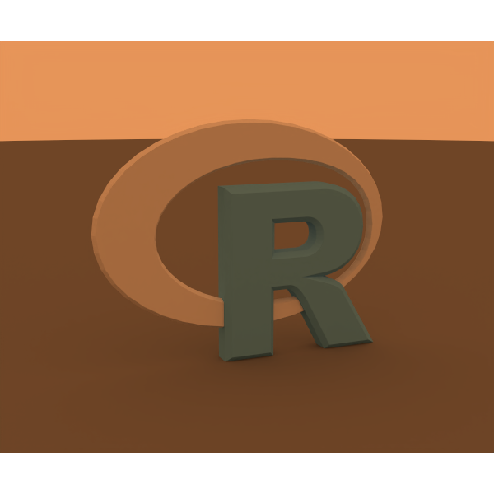
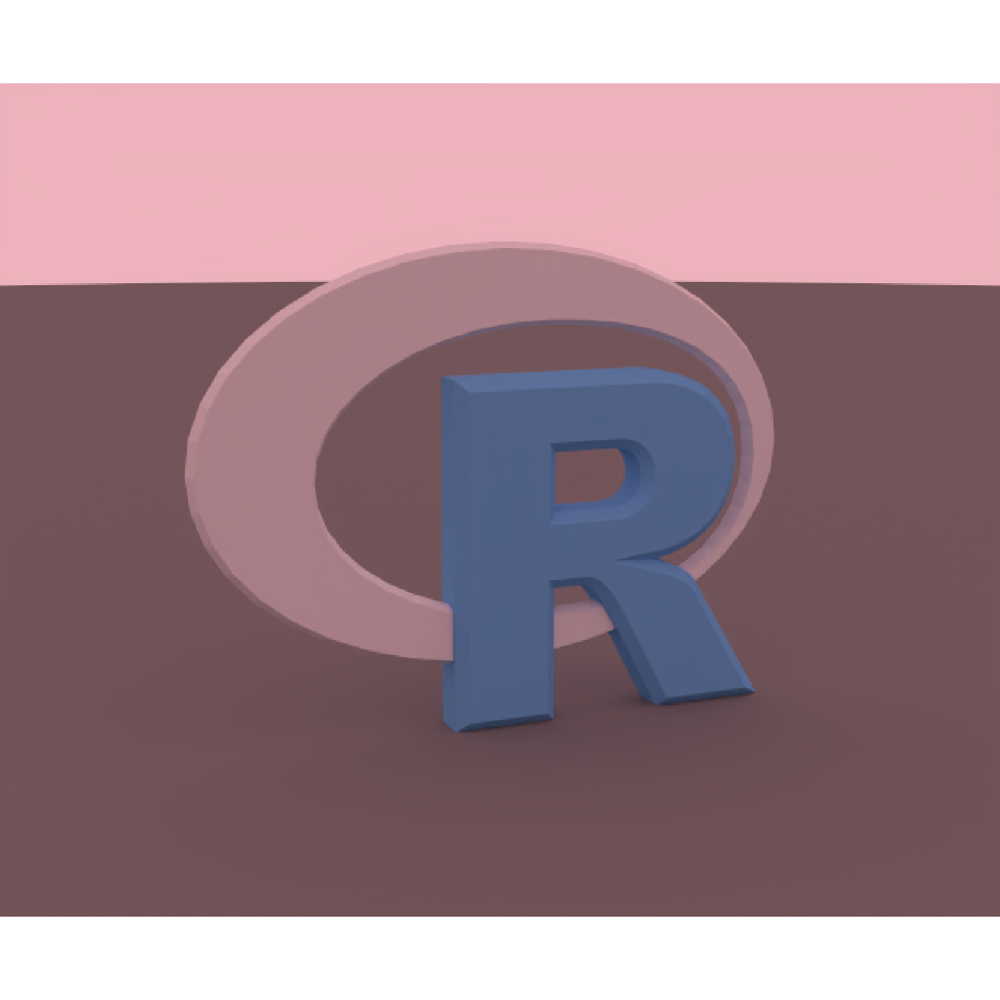
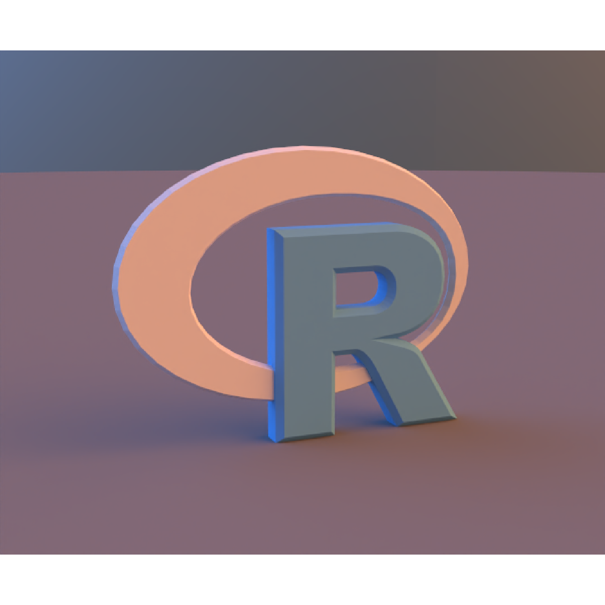

Creates an infinite light from an equirectangular environment image. Attach
lights with add_infinite_light(). Their radiance adds together in the
background, reflections, and illumination of surfaces and volumes.
infinite_light(filename, intensity = 1, rotation = 0, name = "environment")Environment image filename. Supports EXR, HDR, PNG, and JPEG,
using the same image loading and color conventions as environment_light
in render_scene(). HDR and EXR preserve linear high dynamic range values.
Default 1. Nonnegative multiplier for this light's radiance.
Default 0. Rotation in degrees around the world Y axis,
with the same direction as rotate_env in render_scene().
Default "environment". Unique name within the scene.
A ray_infinite_light object.
Infinite lights are scene metadata, like cameras, and do not add
geometry or change scene bounds. Grouping geometry does not transform them.
add_object() preserves lights when combining scenes and rejects duplicate
names. Scene lights suppress automatic fallback illumination, including when
all their intensities are zero. An explicit environment_light render argument
adds another image light; intensity_env controls that legacy light only.
rotate_env and interactive environment rotation rotate all infinite lights
together, in addition to each light's own rotation.
Additive lighting lets you keep an existing HDRI and attach independently adjustable fill lights. At each direction, the background radiance is the sum of the lights after applying their intensities and rotations. For example, a cool fill can reveal detail in blue materials under a warm environment. Keep exposure fixed when comparing the result to see the added illumination.
# Write explicitly linear RGB radiance to EXR, including values greater than 1.
write_environment = function(image) {
file = tempfile(fileext = ".exr")
image = rayimage::ray_read_image(
image,
normalize = FALSE,
source_linear = TRUE,
assume_colorspace = rayimage::CS_SRGB
)
rayimage::ray_write_image(image, file, clamp = FALSE)
file
}
# 1. Add an independently adjustable fill to an existing environment.
# These constant-color maps make the color and brightness changes easy to see.
warm = cool = array(0, c(32, 64, 3))
warm_rgb = c(0.8, 0.3, 0.1)
cool_rgb = c(0.1, 0.3, 0.8)
for (channel in 1:3) {
warm[,, channel] = warm_rgb[channel]
cool[,, channel] = cool_rgb[channel]
}
warm_file = write_environment(warm)
cool_file = write_environment(cool)
# The included R logo retains its blue lettering and gray surround.
# The ground and oblique camera reveal contact shadows and the beveled edges.
base_scene = obj_model(r_obj(), scale = 2.5) |>
add_object(generate_ground(
depth = -0.96,
material = diffuse(color = "grey20")
)) |>
add_camera(camera(
lookfrom = c(2.5, 1.2, -6),
lookat = c(0, -0.05, 0),
fov = 28,
aperture = 0
))
warm_scene = base_scene |>
add_infinite_light(infinite_light(warm_file, name = "warm"))
set.seed(724)
render_scene(
warm_scene,
width = 600,
height = 500,
samples = 128,
integrator_type = "nee",
bloom = FALSE
)

# The two lights contribute warm + 0.5 * cool. The extra cool radiance
# lifts the blue lettering and shifts the background color.
# Keep exposure fixed between renders to see both the color and brightness change.
# The same approach adds fill to a photographic HDRI without editing that image.
additive_scene = warm_scene |>
add_infinite_light(infinite_light(cool_file, intensity = 0.5, name = "cool"))
set.seed(724)
render_scene(
additive_scene,
width = 600,
height = 500,
samples = 128,
integrator_type = "nee",
bloom = FALSE
)

# 2. Warm and cool fills on opposite sides, like two broad studio softboxes.
# Each EXR is dark except for a bright patch above the horizon. The patch is
# one-quarter across the map. Rotations of 30 and 210 degrees put the patches
# on opposite sides. A dim neutral environment keeps the front readable.
u = (seq_len(256) - 0.5) / 256
v = (seq_len(128) - 0.5) / 128
# Longitude wraps around: keep the softbox continuous at the EXR's edges.
du = ((u - 0.25 + 0.5) %% 1) - 0.5
softbox = outer(
exp(-((v - 0.32) / 0.18)^2),
exp(-(du / 0.12)^2)
)
warm_side = cool_side = array(0, c(128, 256, 3))
for (channel in 1:3) {
warm_side[,, channel] = 8 * warm_rgb[channel] * softbox
cool_side[,, channel] = 8 * cool_rgb[channel] * softbox
}
neutral_file = write_environment(array(0.08, c(32, 64, 3)))
warm_side_file = write_environment(warm_side)
cool_side_file = write_environment(cool_side)
fill_scene = base_scene |>
add_infinite_light(infinite_light(neutral_file, name = "neutral")) |>
add_infinite_light(infinite_light(
warm_side_file,
rotation = 30,
name = "warm_fill"
)) |>
add_infinite_light(infinite_light(
cool_side_file,
rotation = 210,
intensity = 0.75,
name = "cool_fill"
))
set.seed(724)
render_scene(
fill_scene,
width = 600,
height = 500,
samples = 128,
integrator_type = "nee",
bloom = FALSE
)

# Change either fill's intensity or rotation independently to shape the lighting.
# This gives independent control over both sides while retaining the base light.